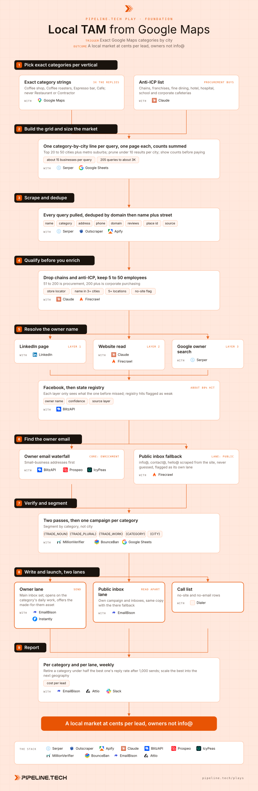

Play 05 · Foundation
Local TAM from Google Maps
Give this to your agent
Install the Pipeline.tech "Local TAM from Google Maps" outbound play. Fetch https://raw.githubusercontent.com/pipeline-tech/plays/main/core/SKILL.md and https://raw.githubusercontent.com/pipeline-tech/plays/main/plays/local-tam-google-maps/SKILL.md, save them as ~/.claude/skills/pipeline-outbound-core/SKILL.md and ~/.claude/skills/pipeline-local-tam-google-maps/SKILL.md, then run /pipeline-local-tam-google-maps.
Paste into Claude Code. It installs the shared core rules plus this play, then runs it as /pipeline-local-tam-google-maps.

Workflow, generated from the skillOpen full size
Coffee shops, plumbers and roofers are not in Apollo or ZoomInfo, and the owner is the buyer. Google Maps lists every one of them with a phone, a website and an exact category. Query the exact category city by city, count before you pay, then spend the money on finding the owner. Pipeline.tech runs this at about 0.03 USD per lead; the same lead costs about 1.22 USD in a no-code enrichment tool.
Load pipeline-outbound-core first. Where a step says "apply core", follow that section of the core skill.
Inputs
Ask for these before step 1, and save them to ./pipeline-plays.config.json:
- The offer in one sentence, one proof point, and the free asset you can make for one business (a branded mockup, a short audit, a list of nearby buyers). The asset is the CTA.
- The verticals in plain words ("coffee shops", "plumbers") and the geography.
- Which categories are seasonal. Ice cream has a window; roofers do not.
- Stack answers from core section 1. Default scraper is Serper's Maps endpoint; Outscraper or Apify if the user has one.
Steps
1Pick exact categories per vertical
ToolsGoogle MapsClaude
- Translate each vertical into the exact category strings Maps uses. "Coffee shops" becomes Coffee shop, Coffee roasters, Espresso bar, Cafe. Never query a generic parent such as Restaurant or Contractor: a promotional products client saw coffee shops reply at about 3x the rate of generic restaurants on the same offer.
- Write the anti-ICP list before scraping: chains and franchises, fine dining, hotel restaurants, hospital, school and corporate cafeterias, anything institutional. These buy through procurement.
2Build the grid and size the market
ToolsSerperGoogle Sheets
- Build a query file with one
category|city, STper line: the top 20 to 50 cities by population plus the suburbs of each major metro. Skip small towns. - Run one page per query and record the result count. Sum by category and by city. That is the market size, and it costs cents. Prune categories under roughly 10 results per city. Show the counts to the user before paying for enrichment.
- Expect about 15 unique businesses per query. An internal run across Texas trades turned 205 queries into about 3,000 businesses.
3Scrape and dedupe
ToolsSerperOutscraper (option)Apify (option)
- Serper's Maps endpoint is
POST https://google.serper.dev/mapswith body{"q": "<category> <city, ST>", "num": 100}. - Pull every query. Keep name, category, street address, phone, website domain, review count, place id.
- Apply core: lists, with one local change. Dedupe by domain first, then by business name plus street address, since one trade name repeats across towns.
- Write the query that found each row in a
sourcecolumn. Keep the raw pull.
4Qualify before you enrich
ToolsClaudeFirecrawl
- Drop the anti-ICP categories. Drop chains: any name in more than three cities, any domain with a store locator, any site listing more than five locations.
- Keep 5 to 50 employees only. 51 to 200 is procurement and owner copy stops working, 200 plus is corporate purchasing. Estimate headcount from the website, review volume and location count.
- Apply core: exclusions.
- Rows with no website stay flagged
no-sitefor the call lane.
5Resolve the owner name
ToolsBlitzAPISerperClaudeLinkedIn
- Run a five-layer waterfall and stop at the first named person: LinkedIn company page owner or founder; the website's about or team page read by an LLM; a Google search for
"<business name>" owner; the Facebook business page; the state business registry. Each layer only sees the rows the one before it missed. - Keep a confidence score and the source layer on every row; flag registry hits, they are weaker.
- Expect about 80% of businesses to return an owner name. The rest feed the public-inbox and call lanes.
6Find the owner email
ToolsBlitzAPIProspeoIcyPeasFirecrawl
- Apply core: enrichment. For owner-operators run BlitzAPI first (strongest on small-business addresses), then Prospeo, then IcyPeas.
- Rows with no owner email get a public inbox scraped from the website (info@, contact@, hello@) in a
public_emailcolumn flaggedlane: public. Never pattern-guess a role address; only use what the site publishes. - Expect about 85% of the list to have some email, roughly a third of it an owner address. Report the split; the two lanes convert differently.
7Verify and segment
ToolsMillionVerifierBounceBanGoogle Sheets
- Apply core: verification. Public inboxes go through both verifiers too.
- Segment by category, not by city. One campaign and one copy set per category.
- Add merge fields per segment:
{TRADE_NOUN}("plumber"),{TRADE_PLURAL}("plumbing companies"),{TRADE_WORK}("plumbing"), plus{CATEGORY}and{CITY}. Fallbacks: first name "there" when no owner was found, last name "-" if the sender requires one.
8Write and launch, two lanes
ToolsEmailBisonInstantly (option)Dialer
- Apply core: copy and send rules.
- Angle: open on something true of the category's daily work, not of the business ("property managers in {CITY} keep looking for a reliable {TRADE_NOUN}"). Email 1 offers the free made-for-them asset, never a call. Email 2 is the threaded "are you the right person for this" bump.
- Lane one: owner emails, main inbox set. Lane two: public inboxes, its own campaign and inbox set, same copy with the "there" fallback. Never mix them; their numbers must read apart. The
no-siteand no-email rows go to a call list. - Respect the window: ice cream and food trucks in February to April, breweries in March to April and August, bakeries in September to October and January, catering in January and September.
- Draft 3 angle variants per category and show them for approval before upload.
9Report
ToolsEmailBisonAttioSlack
- Weekly, per category and per lane: scraped, qualified, owner found, owner email, public inbox, sent, reply rate, interested, meetings, cost per lead. Retire a category under half the best one's reply rate after 1,000 sends; scale the best into the next geography.
- Apply core: credits and handoff.
Guardrails
- The public-inbox lane is a real conflict in our data. One source saw 2 to 4% reply and 10 to 15% positive on info@ style addresses. Another offer saw role emails fail to convert at all. Run it as its own lane, read it on its own, and let the user's numbers settle it.
- Never query a generic category to "cover more". It costs the same to scrape and about 3x more per reply.
- Never upload a registry-layer owner name without the flag; a registered agent is not the owner.
- One business, one sequence. If both the owner and the public inbox resolve, the owner gets the email and the public inbox waits for a later rotation.
Example run
User: "/pipeline-local-tam-google-maps for our commercial-client outreach offer, trades in Texas, free asset is a list of 20 property managers near them"
- Confirmed the offer line, chose Plumber, HVAC contractor, Electrician, Roofing contractor and General contractor, 41 cities and suburbs, 205 queries.
- Sized the grid at one page per query, about 3,100 results, two small cities pruned.
- Scraped the full grid: 3,006 unique businesses after dedupe, 212 chain locations removed, 2,640 kept inside 5 to 50 employees.
- Owner name found for about 80%. Owner email verified for about a third, public inbox for most of the rest, 85% with some address; 310 no-site rows to the call list.
- Five campaigns per lane ("TX Plumbers owners", "TX Plumbers public"), 3 angles approved, scheduled for Monday, about 0.03 USD per lead all in.
Run this play with usPipeline.tech runs Local TAM from Google Maps end to end for clients: infrastructure, lists, copy, sends and replies.
Book a callView on GitHub